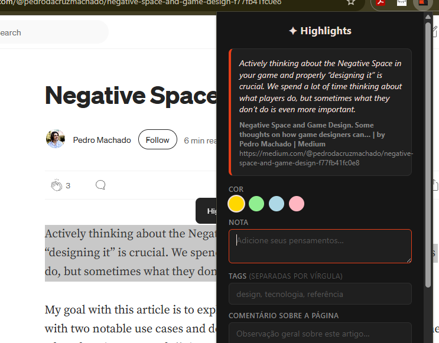

Antes de começar
O processo completo tem seis etapas e leva cerca de 10 minutos. Você vai precisar de:
- ✦ Uma conta no GitHub (gratuita)
- ✦ Um repositório no GitHub — pode ser privado ou público
- ✦ O Chrome ou outro navegador baseado em Chromium
- ✦ Um site onde colar o widget (HTML puro, WordPress, Vercel — qualquer coisa) — opcional
Crie um repositório no GitHub
Esse repositório vai funcionar como seu banco de dados pessoal de destaques. Pode ser privado — só você vai escrever nele via token. O widget pode lê-lo sem token se for público.
- Acesse github.com e clique em New repository
- Dê um nome — ex:
meus-highlights - Escolha Private ou Public (sua preferência)
- Marque "Add a README file" para que o repositório não fique vazio
- Clique em Create repository
od3zza, repositório meus-highlights.
Gere um token do GitHub
O token é o que permite à extensão salvar e ler seus highlights no GitHub. Ele fica guardado localmente no seu navegador e nunca é compartilhado.
- Vá em github.com → Settings → Developer settings → Personal access tokens → Tokens (classic)
- Clique em Generate new token (classic)
- Dê um nome como
eugrifo-extension - Em Expiration, escolha No expiration para não precisar renovar
- Em Select scopes, marque apenas
repo - Clique em Generate token e copie o token agora — ele só aparece uma vez
Instale a extensão
A extensão não está na Chrome Web Store — você a instala como um arquivo local. Por isso o Chrome precisa estar em modo desenvolvedor.
Primeiro, baixe e organize os arquivos numa pasta — ex: eugrifo/:
- Abra o Chrome e acesse
chrome://extensions - Ative o Modo do desenvolvedor (toggle no canto superior direito)
- Clique em Carregar sem compactação
- Selecione a pasta
eugrifo/ - A extensão vai aparecer na lista — clique no ícone de puzzle 🧩 na barra do Chrome para fixá-la
chrome://extensions para recarregar as mudanças.
Configure a extensão
Agora você conecta a extensão ao seu repositório GitHub.
- Clique no ícone da extensão na barra do Chrome
- Clique em ⚙️ Configurações
- Na aba 🔗 GitHub, preencha:
Token ghp_xxxxxxxxxxxxxxxx ← o que você copiou no passo 2 Usuário od3zza ← seu usuário do GitHub Repositório meus-highlights ← o repo criado no passo 1 Arquivo eugrifo-highlights.json ← pode deixar o padrão - Clique em 💾 Salvar configurações
- Clique em 🧪 Testar conexão — deve aparecer "Conectado!"
Na aba 🎨 Aparência você pode personalizar o nome da extensão e as quatro cores disponíveis para destacar textos.
Salve seu primeiro highlight
Com tudo configurado, é só usar:
- Vá em qualquer página da web
- Selecione um trecho de texto com o mouse
- Clique no ícone da extensão na barra do Chrome
- Escolha uma cor, adicione uma nota ou tags se quiser
- Clique em 💾 Salvar highlight — o destaque é enviado ao GitHub primeiro e só então aparece visualmente na página

O arquivo eugrifo-highlights.json no seu repositório será criado automaticamente nesse primeiro save.
Adicione o widget ao seu site
O widget lê seu eugrifo-highlights.json do GitHub e exibe tudo automaticamente — com busca e filtro por tags. Você não precisa subir nenhum arquivo extra.
Na aba 📎 Widget das configurações, o snippet já estará gerado com seus dados. A estrutura é essa:
<div id="meus-grifos"></div>
<script
src="https://cdn.jsdelivr.net/gh/od3zza/eugrifo@main/highlights-widget/widget.js"
data-owner="seu-usuario"
data-repo="seu-repositorio"
data-file="eugrifo-highlights.json"
data-lang="pt"
data-target="meus-grifos">
</script>Para repositórios privados, gere um segundo token no GitHub com permissão de leitura apenas (Fine-grained token → Contents: Read-only) e adicione o atributo:
data-token="github_pat_xxxxx"widget.js hospedado no repositório do eugrifo. Isso significa que qualquer atualização de estilo feita lá reflete automaticamente em todos os widgets instalados via jsDelivr CDN — sem que você precise alterar o código no seu site.
widget.js está em od3zza/eugrifo na pasta highlights-widget/. O jsDelivr o serve automaticamente — sem custo, sem configuração. O CDN faz cache por até 24h; em atualizações urgentes, é possível forçar a versão mais recente trocando @main por um SHA de commit específico.
Resolução de problemas
O highlight não fica destacado na página após recarregar
Clique em 🔄 Restaurar highlights no popup. Se ainda não funcionar, abra o DevTools (F12), vá em Console e veja se há erros.
O destaque some logo após salvar
A partir da v4.0, o highlight só aparece na página após confirmação do GitHub. Se o texto sumiu sem mensagem de erro, verifique a conexão e as configurações de token.
O arquivo JSON está como [] (array vazio)
Edite o arquivo no GitHub e troque o conteúdo para {} (chaves, não colchetes). O sistema espera um objeto.
O widget não carrega no site
Verifique se os atributos data-owner e data-repo estão preenchidos corretamente na tag <script>, se o repositório existe e se o caminho do arquivo bate com o que está nas configurações da extensão.
As cores dos highlights aparecem todas iguais no widget
Certifique-se de estar usando o widget.js v4.0 ou superior. Versões antigas não reconheciam cores no formato hex — apenas nomes como yellow ou blue. A migração automática normaliza os dados na próxima vez que você salvar ou restaurar um highlight.
Erro "token inválido" nas configurações
O token precisa começar com ghp_ ou github_pat_. Se tiver outro formato, gere um novo na página de tokens do GitHub.
Erro 404 ao testar conexão
O nome do repositório ou do usuário está errado nas configurações. Verifique se batem exatamente com a URL do repositório no GitHub.